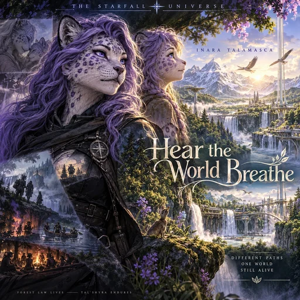

Starfall
Universe
A Living Chronicle
Begin on Inara’s living homeworld of Tal’Shyra. Follow her and Lenthrea through the Kepler frontier, S.T.A.R. cases and midnight stages. The Chronicle also follows Miss Jenkins into fleet command.

Start with the story
All chaptersStart listening
Song catalog
Download the primers
A Living ChronicleIllustrated reader edition · PDF · 11.6 MB
A First PassageOriginal illustrated introduction · PDF · 18 pages